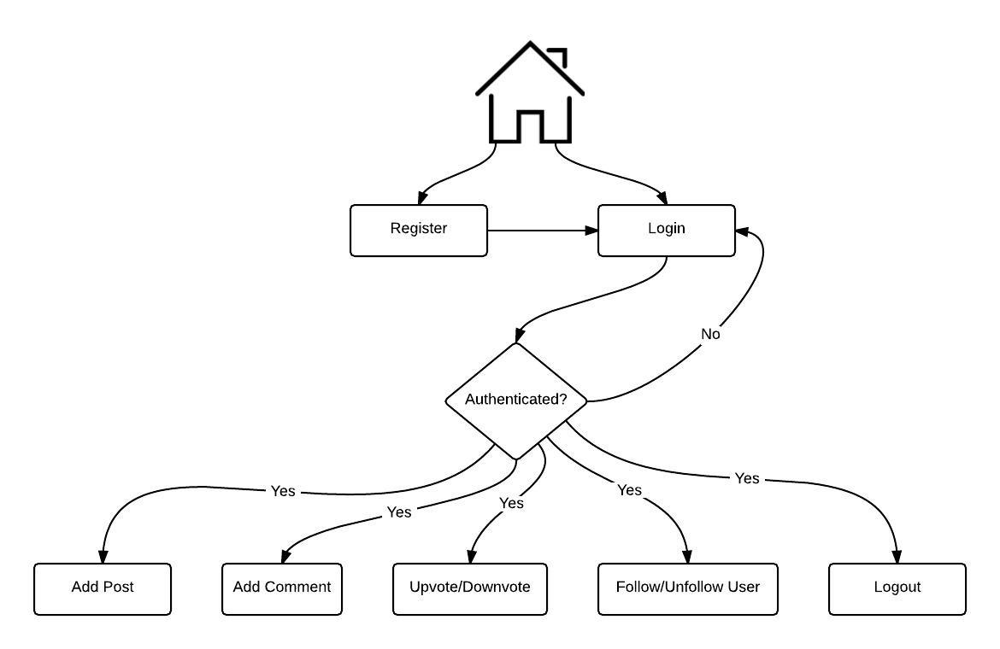

The diagram below represents the different functions that are available in the application along with their flow of operation.
The user can login or register by choosing one of the options available on the home page.
After login, a check is made to verify the authentication details and on success, the page is routed to the Profile view of the user.
If the login is unsuccessful, the login page is displayed again.
Once the user is authenticated, the user may Add a post, comment, upvote, downvote, follow a user, unfollow a user and logout.
